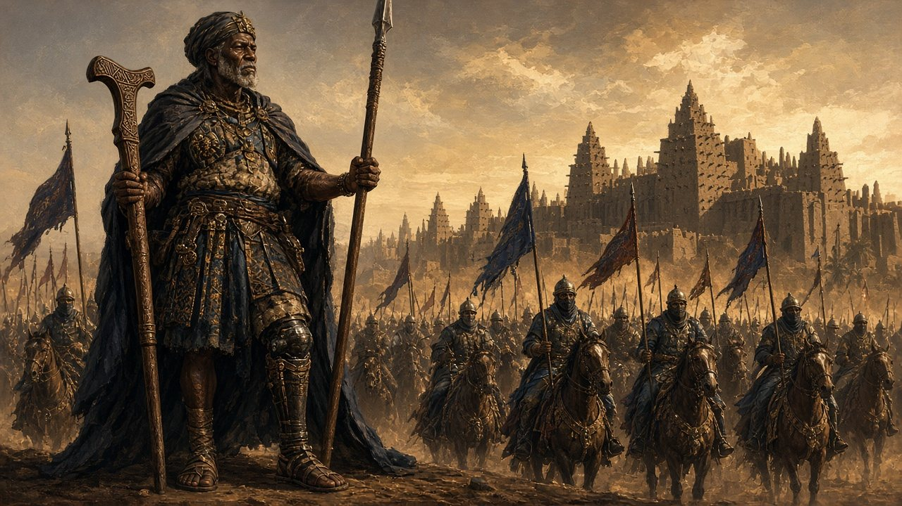

Chapter 1 · Nineteen wars
Yatabéri the Lame Lion
Reigned 23 September 1070 – 31 December 1112 · 42 years
Yatabéri was twenty-eight, a brilliant strategist with a short temper. On the first day of the game he declared war on Kouka of Madare, and by 1072 Sikasso was his.
He never stopped. Tyendugu, Bindugu, Kabarasana, Dodugu: enemy lords lost their land and often their freedom. He proclaimed the Duchy of Bobo in 1074 and, after breaking Bisi the Compassionate, the Kingdom of Kong in 1089. In forty-two years he lost one war.
In 1104 Maysa of Jolof declared a holy war on him. Ten days later Yatabéri converted to Islam and kept fighting. He won, struck back, and in 1109 made Maysa kneel. The Kingdom of Takrūr became Kong's vassal.

A holy war came for him. Ten days later he knelt in a mosque, and kept fighting.
Somewhere along the way he lost a leg. He went to war on one. He invaded Mali at sixty-eight, declared two more wars at seventy, and died in his bed on the last day of 1112.
Key moments
- 1074Proclaimed the Duchy of Bobo
- 1085Defeated by Kodama of Konyan — the County of Kabarasana lost
- 1089Usurped the Duchy of Kong from Bisi the Compassionate of Dyula
- 1089Proclaimed the Kingdom of Kong
- 1091Victory over Wule of Wuro — the Duchy of Worodugu won
- 1093Married Tere of Busuma
- 1104Converted from Bidaism to Sunni
- 1109Maysa of Jolof bent the knee — the Kingdom of Takrūr joins the realm
He started with a village and a grudge. He left his son three crowns.Died 31 December 1112, aged 70: died of old age.